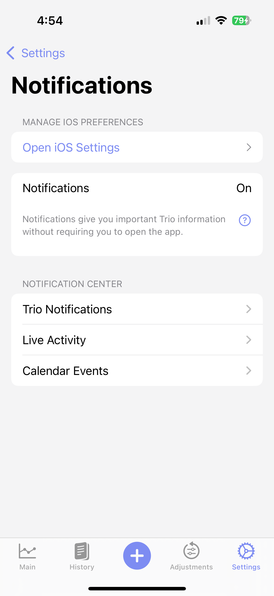
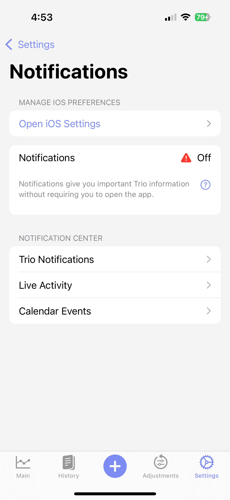
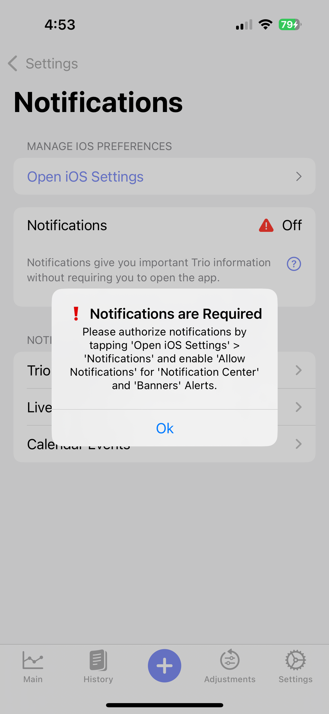
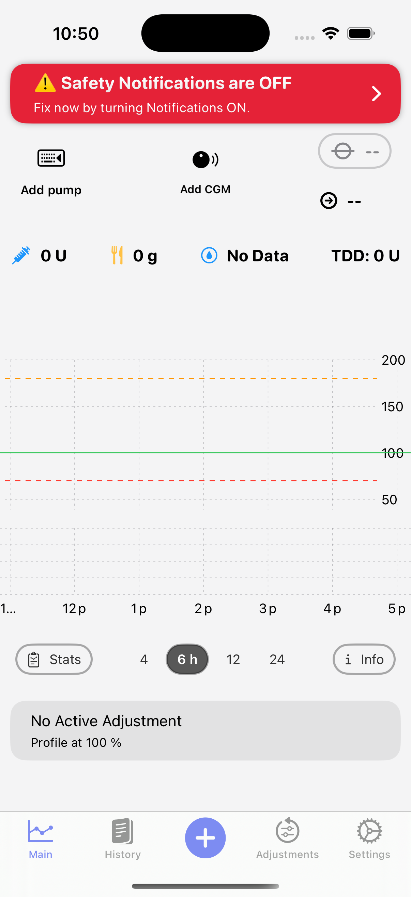

Notifications
Notifications give you important Trio information without requiring you to open the app. It is essential that these are allowed in your iPhone system settings. You can tailor them to your needs in this section.
You may notice a few different alerts and warnings in regards to notifications. Click on the tabs below to see what they are and how to remedy them.
You are good to go! Your notifications are turned on. Proceed to the 3 notification options on the app screen to customize your app notifications.

Your notifications are off. Open iOS Settings and enable them

If notifications are off, this warning will pop up on the notifications screen. Follow the instructions to turn them on in iOS Settings.

If you ignore the warnings, you will see this banner across the top of the main Trio screen. Tap the warning and follow the instructions to resolve the issue.

Play Alarm Sound
Default: OFF
This will cause a sound to be triggered by Trio notifications for Carbs Required and Glucose Low/High Alarms.
Always Notify Pump
Default: ON
With iOS Trio Notifications enabled, you can let Trio display most Pump Notifications in iOS Notifications Center as a Banner, List, and/or on the Lock Screen. It allows you to refer to Trio Information at a glance and troubleshoot any informational issue. Setting iOS Notifications Banner Style to Persistent displays alert banners in the app until you dismiss them.
Note
If iOS Trio Notifications are disabled, Trio will display these messages in-app as a banner only
Always Notify CGM
Default: ON
With iOS Trio Notifications enabled, you can let Trio display most CGM Notifications in iOS Notifications Center as a Banner, List, and/or on the Lock Screen. It allows you to refer to Trio Information at a glance and troubleshoot any informational issue. Setting iOS Notifications Banner Style to Persistent displays alert banners in the app until you dismiss them.
Note
If iOS Trio Notifications are disabled, Trio will display these messages in-app as a banner only
Always Notify Carb
Default: ON
With iOS Trio Notifications enabled, you can let Trio display most Carb Notifications in iOS Notifications Center as a Banner, List, and/or on the Lock Screen. It allows you to refer to Trio Information at a glance and troubleshoot any informational issue. Setting iOS Notifications Banner Style to Persistent displays alert banners in the app until you dismiss them.
Note
If iOS Trio Notifications are disabled, Trio will display these messages in-app as a banner only
Always Notify Algorithm
Default: ON
With iOS Trio Notifications enabled, you can let Trio display most Algorithm Notifications in iOS Notifications Center as a Banner, List, and/or on the Lock Screen. It allows you to refer to Trio Information at a glance and troubleshoot any informational issue. Setting iOS Notifications Banner Style to Persistent displays alert banners in the app until you dismiss them.
Note
If iOS Trio Notifications are disabled, Trio will display these messages in-app as a banner only
Show Glucose App Badge
Default: OFF
This will add your current glucose readings on the top right of your Trio app icon as a red notification badge.
Note
Changing this setting takes effect on the next glucose reading
Glucose Notifications
Default: DISABLED
Set the Glucose Notifications Option. Descriptions for each option found below:
Glucose Alarm Limits
Low Glucose Alarm Limit
Default: 70 mg/dL (3.9 mmol/L)
Range: 40 - 100 mg/dL (2.2 - 5.5 mmol/L)
This setting determines the low value for your alert range. Set this to the low value in which you'd like to receive alerts.
High Glucose Alarm Limit
Default: 180 mg/dL
Range: 100 - 400 mg/dL (5.5 - 22.2 mmol/L)
This setting determines the high value for your alert range. Set this to the high value in which you'd like to receive alerts.
Add Glucose Source to Alarm
Default: OFF
The source of your glucose reading will be added to the notification.